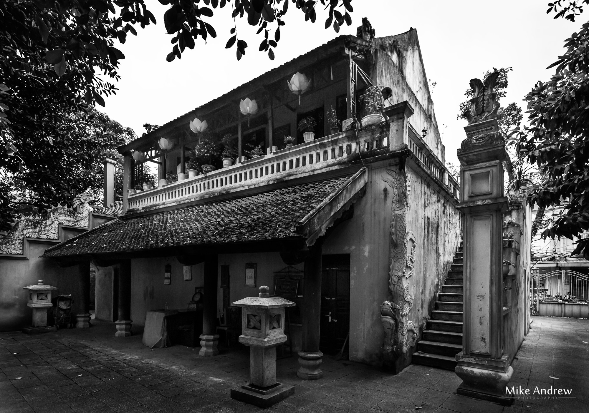
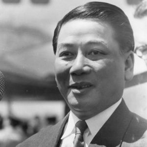

Major Events of Vitenam
-
1945 Year
In march the Japanese declare French rule at and end in Vietnam and Emperor Bao Dai proclaims “independence” in March.
Aware that victory over the Japanese is near in May the Truman administration recognizes French claims to Indochina in part because of (1) the U.S. need for French cooperation in Washington’s plans for the reconstruction of Europe following World War II and (2) the growing orientation toward containment as a political/military strategy against communism.
During the Potsdam Conference in mid-July the allies are convinced that there should be a postwar (WWII) occupation of Indochina by British and Chinese forces in order to forestall independence and return Vietnam to France. At this time the Office ofStrategic Services (OSS) actively supports the Vietminh in their guerrilla war with Japan, and Major Archimedes Patti argues that Washington should recognize the independence of Vietnam.
In September the Communists secure domination in the Viet Minh with the Independence League seizing power; Ho Chi Minh declares full independence for Vietnam and establishes the Government of the Democratic Republic of Vietnam (GRDV) in Hanoi; he appeals to the U.S. for recognition, but receives no response. At this time British forces occupy the Saigon area to take over from the Japanese and begin to rearm the French, and later even the Japanese against the Vietminh.
On November 22, French troops return to Vietnam, transported in U.S. merchant ships, and sporadically clash with Communist and Nationalist forces.
-
1946 Year
On March 6th, France recognizes the Democratic Republic of Vietnam (DRV) as a free state within the Indochinese Federation and French Union. Rejecting this as a phony independence the Viet Minh initiate the eight-year First Indochina War in December with attacks on French troops in the North. Using U.S. vessels the French bombard the port of Haiphong, killing 6,000 civilians, then occupy the port and the city of Hanoi.
-
1947 Year
The Truman Doctrine is issued, promising U.S. support for armed opposition to communists across the globe.
-
1948 Year
The Cold War with the Soviet Union opens most dramatically with the Berlin Airlift ordered by President Truman. The communist government of East Germany, with the direction and backing of the Soviet Union, blockaded access to West Berlin in an effort to remove the joint British, French, and American zone of control in the city.
Washington initiates funding for the French war against the Viet Minh.
-
1949 Year
In March France recognizes an “independent” state of Vietnam; Bao Dai becomes its leader in June. During July, Laos is also recognized as an independent state with ties to France. In November the same status is accorded to Cambodia.
Chinese communists proclaim the People’s Republic of China.
-
1950 Year
The newly established People's Republic of China, followed by the Soviet Union, recognizes the Democratic Republic of Vietnam led by Ho Chi Minh in January.
Washington recognizes the French controlled Bao Dai government.
The Korean War begins in June with a devastating attack by the Communist North on South Korea.
In November, as U.S. forces approach the North Korean border with China, the Chinese Army enters the war and forces U.S. troops into full retreat.
In May, the U.S. begins providing help to the French in Vietnam, Laos, and Cambodia. In August the Pathet Lao communist party and guerrilla group is formed. Discussions among the five nations results in Washington’s dispatch of the Military Assistance Advisory Group (MAAG) to Vietnam. Eventually over 250 U.S. pilots assist the French in their war against the Viet Minh.
-
1951 Year
Communists from Thailand, Laos, and North Vietnam meet in March. As a result an agreement is reached whereby the Vietminh are allowed to use areas in Laos along the border with Vietnam for the staging of equipment and men in their war against the French. During the later American war this will become part of the “Ho Chi Minh” Trail.
-
1952 Year
400 U.S. advisers and supply personnel are serving in Vietnam. Toward the end of the year the French casualties approach 90,000. General Giap begins to develop a strategy to draw the French out to the Laotian border by conducting a show of strength with a march into Laos to the outskirts of Luang Prabang, the royal capitol.
-
1953 Year
The U.S. is providing increasing support for the French effort in Indochina, supplying 80% of the dollar cost. A December Viet Minh offensive cuts Vietnam in two near the 17th parallel.
Prince Norodom Sihanouk gains independence for Cambodia from France.
-
1954 Year
Early in the spring the siege of Dien Bien Phu (located in the rugged mountains of Northwestern (North) Vietnam near the Laotian border begins. Pathet Lao forces block French relief units from getting through to Dien Bien Phu from Laos. As food, ammunition, and medical supplies dwindle, France request American intervention. The Chairman of the Joint Chiefs of Staff, Admiral Radford, the Secretary of State John F. Dulles, and Vice President Richard M. Nixon call for direct American military intervention. However, after discussion with other military advisors, including Army Chief of Staff Gen. Matthew Ridgway, and unable to secure congressional support,, President Eisenhower declines to commit troops. On May 7th the remnants of the French garrison at Dien Bien Phu surrender.
Faced with defeat on the battlefield, France agrees to a conference in Geneva, including the U.S., France, Britain, China and the U.S.S.R.
In June Colonel Edward Lansdale arrives in Saigon to set up the U.S. military mission, as well as to direct covert operations designed to sabotage the DRV.
Ngo Dinh Diem becomes Prime Minister of South Vietnam. He completes the organization of his cabinet by July 7th.
On July 20 and 21, 1954 all parties except the U.S. and South Vietnam sign the Geneva Accords. Though Washington and Saigon refuse to sign, they agree to observe the terms.
The Accords provide:
To foster a “cooling off” period and separate warring forces, Vietnam is temporarily divided at the 17th parallel; the north to be governed by Communists under Ho Chi Minh, while the south would be governed under Diem, until internationally monitored national elections can be held. The option of relocation for people That all foreign troops be removed except French troops in South who will remain until mandated elections. A no reprisal clause Vietnam-wide elections to be held in 1956 to choose the government of the entire nation. Laos and Cambodia to be recognized as independent (Cambodia on September 25th and Laos later in the year). In October President Dwight D. Eisenhower advises Diem that the U.S. will provide assistance directly to South Vietnam, instead of channeling it through French authorities.
A short time later the Eisenhower administration provides economic and military aid to South Vietnam under the leadership of Diem. This coincides with the establishment of the Southeast Asia Treaty Organization (SEATO) on September 7th. The agreement, signed in Manila, was devised to check communist expansion in the region. Although there are no provisions requiring any of the signatories,(U.S., Britain, France, Australia, New Zealand, Pakistan, Thailand, and the Philippines) to provide support for South Vietnam, there is a provision declaring that should South Vietnam be attacked the members would immediately initiate armed force against the “aggressor.”
-
1955 Year
The Diem regime begins to consolidate its position. By mid May South Vietnam formally requests U.S. instructors for its army, the Army of the Republic of Vietnam (ARVN). Hanoi brings forth a proposal to normalize relations in order to prepare for the elections scheduled by the Geneva Accords. However, on July 20th, backed by Washington, Diem announces his refusal to take part in the general elections scheduled for the following year by the Geneva Agreements. The Diem regime argues that free elections are impossible in the Communist North. However, Diem organizes a rigged election in the South and proclaims himself the victor. The U.S. quickly recognizes Diem’s government as the “legitimate” government of all of Vietnam and begins to finance the government and the newly established Army of the Republic of South Vietnam (ARVN).
In Cambodia Prince Norodom Sihanouk abdicates his throne as King in favor of his parents. This opens the way for his entry into politics as the national leader of a socialist political party, the Sangkum. For Sihanouk and many political activists in Cambodia this represents a centrist path between the political right of the Democratic Party and communist controlled Pracheachon to the left.
-
1956 Year
Despite Washington’s promise to honor the Geneva Accords, an American Military Assistance Advisory Group (MAAG) takes over the training of South Vietnamese forces in late April. This represents the beginning of the “advisory” force that will number nearly a thousand troops by the end of the Eisenhower administration.
The French command disbands and French troops leave South Vietnam.
In violation of the Geneva Accords Diem begins to arrest all those identified as involved in the war against the French. Facing opposition across the south as America’s “puppet,” Diem initiates a terror campaign and begins forcibly to displace peasants from their ancestral villages into government holding camps, or “strategic hamlets.”
-
1957 Year
On January 3, 1957 the International Control Commission declares that both North and South Vietnam had failed to comply with the Geneva Agreements.
-
1958 Year
“The Rockefeller Report” on defense policy and strategy is issued pushing the concept of graduated deterrence and flexible response as rational alternatives to massive retaliation. The principal authors of the report are Townsend Hoopes and Henry Kissinger.
In January the communists assault a plantation north of Saigon. As ever more guerrilla incidents in South Vietnam increase, the U.S. becomes increasingly concerned about the infiltration of cadres from the north, though the majority at this stage are native southerners returning to their southern villages as they intended to do after the nationwide elections that were never held. Intelligence indicates that the Annam Cordilla (the spine of mountains running north to south through the center of Indochina - along the western border of North and South Vietnam, and eastern Laos) is quickly becoming a major infiltration route (later called the Ho Chi Minh trail).
Following the methods employed by the French, the U.S. finds local spokespersons and forms an alliance with the minority populations of various hill tribes (Hmong, Yao, Meo, etc.). In Laos, Col. Vang Pao, a Meo tribesman by origin, is enjoined to organize harassment and interdiction of the growing North Vietnamese supply line.
Country history
Archaeological findings from 1965, still under research, show the remains of two hominins closely related to Sinanthropus, dating as far back as the Middle Pleistocene era, roughly half a million years ago. Ancient Vietnam was home to some of the world's earliest civilizations and societies—making them one of the world's first people who practiced agriculture.
The Red River valley formed a natural geographic and economic unit, bounded to the north and west by mountains and jungles, to the east by the sea and to the south by the Red River Delta. The need to have a single authority to prevent floods of the Red River, to cooperate in constructing hydraulic systems, trade exchange, and to fight invaders, led to the creation of the first Vietnamese states approximately 2879 BC.
The Red River valley formed a natural geographic and economic unit, bounded to the north and west by mountains and jungles, to the east by the sea and to the south by the Red River Delta. The need to have a single authority to prevent floods of the Red River, to cooperate in constructing hydraulic systems, trade exchange, and to fight invaders, led to the creation of the first Vietnamese states approximately 2879 BC.
Another truly influential part of history in Vietnam occurred during the late Bronze Age, when the Đông Sơn culture dramatically advanced the civilization. Vietnam's peculiar geography made it a difficult country to attack, which is why Vietnam under the Hùng kings was for so long an independent and self-contained state. The Xích Tỵs and Qins were among the earliest foreign aggressors of Vietnam, but the ancient Vietnamese managed to regain control of the country soon after the invasions.
Historical events
Vietnam was part of Imperial China for over a millennium, from 111 BC to AD 939. The Vietnamese became independent in 939, following the Vietnamese victory in the Battle of Bạch Đằng River. Successive Vietnamese royal dynasties flourished as the nation expanded geographically and politically into Southeast Asia, until the Indochina Peninsula was colonized by the French in the mid-19th century. Following a Japanese occupation in the 1940s, the Vietnamese fought French rule in the First Indochina War, eventually expelling the French in 1954. Thereafter, Vietnam was divided politically into two rival states, North and South Vietnam. Conflict between the two sides intensified, with heavy intervention from the United States, in what is known as the Vietnam War. The war ended with a North Vietnamese victory in 1975.
.jpg)
Vietnam was then unified under a communist government but remained impoverished and politically isolated. In 1986, the government initiated a series of economic and political reforms which began Vietnam's path towards integration into the world economy. By 2000, it had established diplomatic relations with all nations. Since 2000, Vietnam's economic growth rate has been among the highest in the world, and, in 2011, it had the highest Global Growth Generators Index among 11 major economies. Its successful economic reforms resulted in its joining the World Trade Organization in 2007.
Famous Leaders
Former mandarin of the Nguyễn dynasty, a Prime Minister of State of Vietnam led by Bảo Đại since 1954. In October 1955, he announced a victory after a plebiscite, deposed Bảo Đại and established the first Republic of Vietnam (RVN) in South Vietnam. In November 1963, after constant religious protests and non-violent resistances, Diệm was assassinated, along with his brother, Ngô Đình Nhu, by Nguyễn Văn Nhung, the aide of the leader of The Army of Republic of Vietnam (ARVN) General Dương Văn Minh during a coup d'état sanctioned by the US. The assassination led to the end of the US-Diệm alliance and the collapse of his regime as well as the first Republic of Vietnam.
Diệm has been a controversial historical figure in historiography on Vietnam War scholarship. Some historians portrayed him as a tool of the US policymakers, some considered him as an avatar of Vietnamese tradition. Nevertheless, some recent studies have portrayed Diệm from a more Vietnamese centered perspective as a competent leader with his own vision on nation building and modernization of South Vietnam